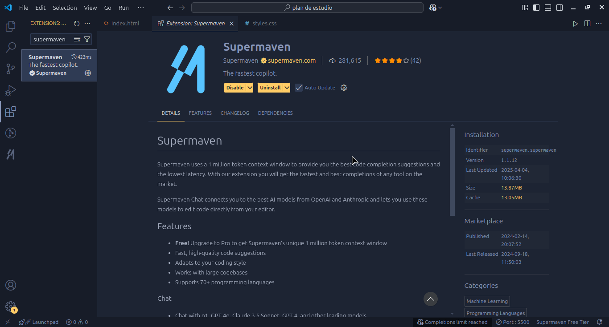

Plan de Estudios: JavaScript, Node.js y Express.js para Crear una API
Herramientas recomendadas:
Visual Studio Code
Visual Studio Code es el IDE preferido para escribir codigo, con muchas extensiones que ayudan como extensiones que resaltan errores en el codigo y otras que pueden ayudar a ser mas productivo al completar codigo por ti, aunque hayan mas IDEs o lugares para escribir codigo para el curso asumire que lo tienen instalado asi que sera mas optimo que lo tengan
Descargar Visual Studio Code
Configuracion y extensiones recomendadas
Ala izquierda veran opciones que son herramientas utiles, estos iconos en la barra lateral izquierda seria bueno que los conozcan pero en este curso solo veremos una de ellas, que es el de las extensiones, su icono son cuatro cuadritos que deberan dar click.
cuando lo presionen veran que su barra lateral cambiara y en esa barra lateral arriba encontraran una de busqueda, donde tendran que colocar los nombres de las extensiones he instalarlas, les dare el nombre de algunas extensiones que les seran muy utiles para programar
Halcyon theme:
es para añadir un tema oscuro que no daña los ojos, hace que el codigo se diferencie mejor, otra extension para tema de colores es One Dark Pro, lo pueden perzonalizar a su gusto

Supermaven:
inteligencia artificial para completar codigo, le dar a la tecla Tab para aceptar el autocompletado que te de
ESLint:
una extension que ayuda para ayudar con posibles errores en el codigo
Error lens:
te dira la linea en donde hay un error y detalles del error, resaltara esa linea donde haya un error con rojo y te dira detalles de por que hay un error
Esta es otra configuracion: en su teclado presionen las teclas Ctrl + Shift + P, Esto les abrira una barra de busqueda,
busquen: Preferences: Open Settings (JSON) presionen en esa opcion y les abrira un archivo, descarguen el archivo que les pasare, copien el contenido y peguenlo en el lugar donde iran sus configuraciones reales config.json
para activar el tema de color que instalaron, animacion para scroll, auto guardar, auto guardar despues de 5 segundos, desactivar minimapa y hacer que el texto se acomode a su pantalla
por ultimo la carpeta donde estaran sus archivos arrastrenlo hasta la aplicacion de vscode hasta que les indique la aplicacion que se abrira correctamente
JavaScript
JavaScript es un lenguaje de programación interpretado, de código abierto, dinámico y orientado a objetos. Es un lenguaje de programación de propósito general, que puede ser usado en cualquier contexto para crear aplicaciones web, móviles y de escritorio.
Características importantes
- Interpretado
- Orientado a objetos
- Tiene tipado dinamico
- De propósito general
- Utiliza camelCase
Lenguaje interpretado
con el ejemplo de C++ es un lenguaje compilado porque hay que compilar todo el codigo, crea todo un archivo aparte para ejecutarlo, en el caso de JavaScript es interpretado porque no creara un archivo nuevo, el codigo se suele ejecutar directamente en el navegador, que interpretara linea por linea cada linea del codigo, lee una linea, la interpreta y ejecuta
Lenguaje orientado a objetos
es un paradigma de programacion muy util que lo veremos mas adelante cuando entremos a Node.js
Tipado dinamico
en C++ el tipado es fuerte porque las variables se declaran como un tipo como numero y no puede cambiar el tipo de la variable, en JavaScript el tipado es dinamico porque las variables pueden cambiar de tipo, por ejemplo:
var a = 1;
a = "hola";
a = true;
Propósito general
Este lenguaje es usado comunmente en la web pero también se usa en otros contextos, no solo para desarrollar aplicaciones web si no tambien aplicaciones desarrollo mobile, aplicaciones de consola entre etros.
Utiliza camelCase
para escribir variables o funciones usamos camelCase que es una forma de escribir donde si hay varias palabras la primera palabra se escribe en minusculas ejemplo: variable. y luego las demas palabras empiezan por mayusculas, ejemplo: sumarNumero, funcionParaSumarVariables. funciones integradas estan escritas asi por eso es importante
Conceptos básicos
- Variables
- Tipos de datos
- Arrays
- Objetos
- Operadores de comparacion
- Condicionales
- Bucles
- Funciones
- Módulos
- Eventos
Variables
Las variables son espacios en memoria donde se almacenan los datos las variables se declaran antes de usarse, por ejemplo:
var a = 1;
var b = 2;
otra forma de declararlas es:
var a = 2, b = "hola", c = true;
separandolas por comas, de esta forma se declaran todas las variables en una sola linea, pero puede ser mas interesante hacerlo en lineas separadas para mejorar la legibilidad del codigo.
para poder usar una variable primero hay que declararla, para declarar una nueva variable se usan las palabras var, let y const, que no se recomienda usar var, al declarar una variable con var su alcance sera global, por lo que podra existir y usarse en todos los ambitos del programa, pero es mejor practica que las variables sean let o const que tienen un alcance local, que usualmente tambien mas comun es let ya que const es para variables constantes, en otros lenguajes se dice que no son variables constantes, ya que o son variables por que pueden cambiar, o constantes porque son solo de lectura son inmutables por lo que no pueden cambiar de valor, pero en JavaScript si, evita que una variable se reasigne a otro valor, pero no garantiza la inmutabilidad del contenido, a diefrencia de otros lenguajes donde esto es mas estricto, si creas una variable como por ejemplo:
a = 10;
esta valiable por defecto usara var por lo que es recomendable siempre usar let o const
Ejemplo:
let a = 10;
const PI = 3.14159;
let c;
como se ve en el ejemplo para declararlas se usa primero el alcance de la variable seguido de un espacio, se coloca el nombre de la variable pero hay algunas restricciones para el nombre de las variables que pueden ser palabras reservadas o signos, y por ultimo se le puede asignar un valor o no que al asignar un valor se dice que se estan inicializando, puede estar vacio para en un futuro inicializarse, lo inicializamos colocando un signo igual "=" despues del nombre de la variable y colocandole el valor que se desee agregar, una recomendacion es agregar punto y coma al final ";", representan el final de una sentencia de codigo, en JavaScript no es tan esctricto el uso y puede llegar a funcionar el codigo sin los punto y coma pero es buena practica usarlos debido a que pueden surgir errores ya que el interprete intenta adivinar donde pueden haber ";" y tu codigo puede hacer cosas inesperadas.
ejemplo simple:
let c = 1;
let a = 10;
let b = a
++c
el interprete puede llegar a verlo como
let c = 1;
let a = 10;
let b = a++c
lo que seria un error de sintaxis.
Parte practica
para empezar a progamar con JavaScript lo mas comun es usar la web para ejecutar el codigo, por lo que deberan crear dos archivos con extensiones diferentes, en una carpeta creen un archivo index.html y un archivo app.js, el archivo con extension ".html" es para estructurar paginas web, y el arcihvo con extension ".js" es la logica que contendra esa pagina y es donde nosotros trabajaremos, en el archivo index.html deberan escribir lo siguiente:
<!DOCTYPE html>
<html lang="es">
<head>
<meta charset="UTF-8">
<title>Mi Página</title>
</head>
<body>
<script src="app.js"></script>
</body>
</html>
la etiqueta script es para incluir archivos o codigo Javascript en un archivo aparte creas un archivo con el nombre que quieran pero con la extension .js y en el archivo index.html adentro de la etiqueta
<body></body>
adentro de esta etiqueta body debe ir al final de todo la etiqueta script y en src="" adentro de las comillar pones el nombre del archivo y trabajar escribiendo codigo desde ese archivo.js que es lo que recomiendo
<body>
<script src="codigo.js></script>
</body>
otra forma es escribiendo desde la etiqueta script el codigo sin poner src=""
<body>
<script>
let variable = "texto";
let numero = 1;
let booleano = true;
</script>
</body>
en el archivo.js esciban una variable y muestrenlo con alert(), como por ejemplo:
let a = 10;
alert(a);
dirijanse a donde crearon su archivo .html de su proyecto, deberan darle click derecho al archivo .html y deberan escoger un navegador para ejecutar el codigo, como por ejemplo darle click derecho y elegir google, si siguieron bien los pasos anteriores deberian ver una alerta con el valor de la variable que hayan puesto.
deberan tener en cuenta el sitio donde colocaron los archivos para el src="", en el caso que solo hayan puesto el nombre de su archivo como por ejemplo:
src="sript.js"
buscara en la misma carpeta un archivo con ese nombre, tambien sucedera con ./ al principio del nombre, le estas indicando explicitamente que tu archivo esta en la misma carpeta que tu archivo .html, por ejemplo:
src="./script.js"
tambien otra opcion es que tengan la logica en una carpeta aparte adentro de la misma carpeta, lo cual puede ser una opcion muy buena en este caso ya que en el curso se haran varios ejercicios y en lugar de borrar lo que ya han hecho y escribir otro ejercicio estaria bien que crearan diferentes archivos con estension .js y solo tendrian que cambiar la ruta del src="" en el html, lo que les ayudara a tener guardada la logica y poder revisarla en un futuro cuando la necesiten para repasar, un ejemplo es que creen una carpeta llamada logica, en la carpeta logica creen un archivo llamado script.js y luego en su html en la ruta coloquen:
src="./carpeta/script.js"
luego otro caso es que tengan su archivo index.html en una carpeta y su logica este afuera de esa carpeta, en ese caso tendran que usar ../ donde se le indica que nuestra logica se encuentra una carpeta afuera de donde esta nuestro html, si estuviera dos carpetas afuera usariamos ../../ y asi susecivamente cuanto mas afuera este nuestra logica, por ejemplo:
src="../script.js"
y el ultimo ejemplo es que tengan el html en una carpeta y el codigo JavaScript en otra carpeta adentro de una carpeta que los contenga, que puede ser comun cuando trabajamos en un proyecto mas grande, como por ejemplo:
src="../logica/script.js"
que se puede entender como, busca una carpeta afuera, busca la carpeta logica, busca el archivo script.js y si lo encuentra usara esa logica.
eviten poner nombres con espacios, utilizen camelCase para evitar estos espacios en los nombres de las carpetas.
por ultimo, con el editor de codigo abierto, hay dos opciones para poder editar esos archivos para escribir el codigo, el primero es el mas facil, solo arrastran el folder con su proyecto adentro del editor de codigo hasta que el editor les indique que se abrira correctamente, el segundo es que en la barra superior a la izquierda, o la barra que se encuentra arriba del todo a su izquierda, encontraran varias palabras, presionen File que les abrira un menu desplegable, en ese menu encuentren la palabra "Open Folder..." para la carpeta de su proyecto u "Open File..." para abrir un archivo es concreto.
Tipos de datos
los tipos que puede almacenar una variable
- String
- Number
- Boolean
- Array
- Object
- Null
- Undefined
- Any
String
un tipo comun en JavaScript es el tipo string, para inicializar una variable para que contenga un string solo hay que colocar el texto adentro de comillas, ya sean dobles " ", simples ' ' o template strings ` `, estas cadenas de texto tienen ciertas interacciones interesantes con los operadores que los veremos luego, uno interesante es el operador + que es para sumar, pero con las cadenas de texto este los concatena o dicho de otra manera los une, por lo que si tenemos "texto1" + "texto2" nos dara como resultado "texto1texto2", esto pasara aunque los textos sean numeros, ya que podemos tener "22" y no lo vera como un numero si no como un string, al hacer la suma "22" + "10" nos devolvera un "2210", un ejemplo:
let cadena = "hola ";
let texto = "mundo";
let holaMundo = cadena + texto;
alert(holaMundo);
y ahora solo es cuestion de probar el codigo, y veran su hola mundo en forma de alerta, felicitaciones! has creado tu primer hola mundo con JavaScrpit, ahora puedes presumirselo a todo el mundo como un gran logro. Deben tener en cuenta que los strings tambien tienen en cuenta los espacios en blanco por lo que pueden separar las palabras, para poder guardar comillas adentro de una variable string solo hay que usar comillas diferentes y asi se podran "escapar" como se le dice, si quieren escapar comillas dobles deberan usar por ejemplo ' "cadena" ', y para comillas simples " 'cadena' ", `` las templates strings tambien puede escapar ambas, en el ejemplo use espacios para que se note la diferencia pero como dije los espacios tambien cuentan y se guardaran por lo que es algo a tomar en cuenta. Una ultima interaccion es con el operador - que es para la resta, ya que el lenguaje tiene una particularidad muy interesante que es que si tienes cadenas de texto que son numeros y usas el operador - lo que hara sera que se restaran, por ejemplo:
let numero1 = "1";
let numero2 = "1";
let numero3 = numero1 + numero2;
alert(numero3);
este nos devolvera un 0, porque JavaScript tambien es dinamico, lo que hace que va a intenta convertir los tipos de datos para que tu programa funcione, en este caso el operador - no se puede usar con cadenas de texto, se usan con numeros por lo que JavaScript intentara convertir el texto a tipo numerico y de ahi viene la interaccion tan curiosa que en otros lenguajes de programacion serian solo un error.
Number
para guardar tipos de datos numericos que pueden ser decimales o enteros, un ejmpelo de decimal seria 30.10, y entero 100, estos tienen interacciones con operadores aritmeticos, como lo son + para la suma, - para la resta de numeros, * para la multiplicacion, / para la division y % que es para modulo o dicho de otra forma es el residuo de la division, son muy comunes y no se deben confundir con numeros que sean enrealidad strings, como por ejemplo:
let numero1 = 1;
let numero2 = 1.5;
let numero3 = nomero1 + numero2;
let numeroCadena = "1";
numero1 = "4";
que como vemos en este caso numero uno cambio de ser tipo numerico a ser de tipo texto y asi se puede cambiar cuantas veces se quiera o necesite en la logica.
Boolean
para almacenar datos booleanos que son solo dos valores, verdadero o falso, true or false, que tambien se pueden representar con 1 o 0, estos valores son muy utiles y muy utilizados en programacion en general, su uso lo veremos mas adelante, ejemplo:
let bool = true;
let bool2 = false;
Array
son colecciones de datos, que se puede entender mejor como una lista de datos, por lo que en lugar de tener muchas variables de un mismo tipo, o que tengan relacion, una opcion muy buena es que esten adentro de un array, veremos mas a profundidad estos arrays pronto en el curso.
Object
los objetos tambien son colecciones de datos, pero estos tienen una diferencia muy importante con respecto a los arrays que profundizaremos mas luego en el curso.
Null
este es un tipo de dato que lo definimos nosotros, en el caso de que nuestra variable querramos que este vacia al inicio, ejemplo:
let vacio = null;
y lo podran ver al usar alert, que les mostrara que el tipo de dato es null, o exxplicitamente vacio.
Undefined
este tipo de dato como su nombre en ingles lo indica, es un tipo de dato sin definir, cuando no se le agrega null para que este vacio, si no que no se le ha dicho que contendra.
let sinDato;
alert(sinDato);
al hacer esta alerta podremos ver que lo que nos mostrara sera undefined.
Any
any es un tipo que viene por defecto, y es el tipo de dato que tienen todas las variables que no se han inicializado, si se inicializa con un numero sera del tipo number, pero si no se inicializa sera del tipo any, lo que quiere decir que puede contener cualquier cosa, cualquier tipo de dato lo podra contener, pero por el momento no esta definido.
Parte practica
les recomiendo seguir y hacer los ejercicios, incluso el hacer sus propios ejercicios cambiando algunas cosas, ya que la mejor forma de aprender a programar es simplemente programando. En esta ocacion utilizaremos lo que es la consola, que es una herramienta demasiado utilizada para hacer pruebas o testeo.
para este ejercicio crearan un archivo con extension .js y crearan variables y las inicializaran, las variables deben contener todos los tipos de datos anteriormente mencionados en el curso, deberan mostrar tanto el dato, como el tipo de dato de la variable utilizando la consola, solo el tipo any creo que no se puede mostrar en consola, pongan su cursor encima de una variable sin inicializar y les mostrara que es de tipo any.
para utilizar la consola tendran que hacer un click derecho sobre una pagina web, que en su caso sera sobre la pagina de su proyecto, al hacer click derecho les apareceran diferentes opciones, presionen la opcion de Inspeccionar que estara abajo del todo entre las opciones, esto les mostrara las herramientas de desarrollo que tienen los browsers, como google que tiene estas herramientas para ayudar a programadores con el desarrollo, a la derecha encontraran arriba una cinta de opciones, que contiene palabras como Elements o Console, deberan de presionar en Console para acceder a la consola, en caso de que no les aparezca, en esa cinta de opciones se encuentra unas flechitas dobles que deberan presionar y se desplegaran mas opciones y podran buscar la opcion Console.
bien, ya estan en la consola de comandos, ahora en su programa, en su archivo con extension .js tendran que mostrar los datos solicitados, ejemplo:
let num = 1;
console.log(num);
console.log(typeof num);
luego de haber escrito este ejemplo tendran que ir a su pagina web, recargar la pagina y revisar en la consola, les tendran que aparecer los datos, tanto lo que almacenaba la variable como el tipo de dato, console.log() lo que hara sera que mostrara en la consola todo lo que le hayas puesto, tanto texto con comillas, numeros y variables, y la palabra typeof antes de la variable adentro del console.log() nos mostrara el tipo de dato de lo que venga despues de decir el typeof, algunos ejemplos de console.log():
console.log("texto");
console.log(12 + 12);
console.log(true);
Arrays
array como ya mencionamos son colecciones de datos o listas de datos, ejemplo de un array:
let lista = [];
que en este caso es un array vacio, no contiene nigun dato, otros lenguajes de programacion los array solo pueden contener un tipo de dato, como si son numeros, no puede almacenar otro tipo de dato que no sea numero, pero en JavaScript los datos pueden ser mixtos, como por ejemplo:
let coleccion = [true, "texto", 12];
lo mas comun y recomendado es que los datos todos tengan relacion entre si, en lugar de nosotros escribir algo como:
let lunes = "lunes";
let martes = "martes";
let miercoles = "miercoles";
let jueves = "jueves";
let viernes = "viernes";
let sabado = "sabado";
let domingo = "domingo";
console.log(lunes,martes,miercoles,jueves,sabado,domingo);
que son muchas variables que contienen los dias de la semana, y asi pueden ser otras muchas variables mas que hagan el codigo largo y el programar mas tardado, en lugar de eso puedes hacer algo como:
let diasDeLaSemana = ["lunes","martes","miercoles","jueves","viernes","sabado","domingo"]
console.log(diasDeLaSemana);
copien ambos ejemplos y veran que ambos muestran que ambos muestran los dias de la semana pero con una diferencia, que el primero mostrara el valor de todos las variables, en el otro mostrara entre parentesis cuantos datos contienen a lista de datos, mostrara la lista de datos, y tambien habra una flechita a la que deberan darle click, les mostrara numeros de un lado y valores del otro, que es la posicion de cada valor, "lunes" esta en la primera posicion, pero los arrays comienzan con la posicion 0, por lo que veran algo como
0: "lunes"
1: "martes"
2: "miercoles"
3: "jueves"
4: "viernes"
5: "sabado"
6: "domingo"
como veran son enrealidad listas clave valor, donde a cada valor le corresponde una clave numerica, que correspondera a su posicion empezando desde cero, llendo en direccion de izquierda a derecha, y para acceder a un valor en concreto hay que hacerlo mediante su posicion, por lo que si queremos mostrar solamente el dia lunes seria algo asi:
console.log(diasDeLaSemana[0]);
hay que colocar el nombre de la lista segido de corchetes [] y por ultimo colocarle la posicion que se quiera mostrar, y esto se puede usar tambien de otras maneras, y les dare un apr de ejemplos:
let numero;
let numeros = [1,2,3,4];
numero = numeros[0];
ahora la variable numero contendra el valor que tiene la posicion 0 de la lista numeros, por lo que numero ahora vale 1.
let numero = 10;
let numeros = [1,2,3,4];
numeros[0] = numero;
en este caso en la lista numeros en la posicion 0 el valor se cambiara por el valor de la variable numero, la lista se veria algo asi [10,2,3,4]
let arr = [1,2,3,4];
let numeros = [arr,5,6,7];
en este este caso que vemos que los arrays tambien pueden contener otros arrays la lista se veria algo asi [[1,2,3,4],5,6,7]
let arr = [1,2,3,4];
arr.push(5);
.push es un metodo que tienen todos los arrays, secribes el nombre del array, llamas a .push seguido de parentesis y adentro de los parametros hay que darle un valor, este valor lo guardara en la lista al final, por lo que la lista quedaria algo asi [1,2,3,4,5] asi puedes hacer crecer la lista y agregar nuevos valores, no se preocupen si no entienden un termino que luego lo veremos.
Objetos
los objetos tambien son una coleccion de datos clave valor, pero a diferencia de los arrays las claves las ponemos nosotros, un ejemplo de un objeto:
let persona = {nombre: "julio", edad: 22, trabaja: true};
el objeto persona es util en caso de que querramos concentrar informacion relacionado a algo, en este caso personas, que contendran nombres, edades, y si trabajan o no, se ponen llaves {}, se coloca adentro de las llaves la clave, luego colocar dos puntos : y por ultimo el valor, cada clave calor se separa por comas, para acceder a sus valores se puede hacer algo asi:
let persona = {nombre: "julio", edad: 22, trabaja: true};
console.log(persona.nombre);
console.log(persona);
donde ya no accedemos al valor por su posicion si no por su clave, los arrays y objetos pueden hacer combinaciones interesantes ya que, los objetos pueden contener a su vez, otros objetos, los arrays pueden contener arrays, los arrays pueden contener objetos, y los objetos arrays, por lo lo que algo frecuentemente usado es tener arrays de objetos, estas listas tambien pueden guardar variables, tambien se suelen usar saltos de linea para hacer que todo sea mas legible, por lo que mostrare unos ejemplos:
let listaDeEstudiantes = [
{ nombre: "julia", promedio: 75, cursos: ["matematicas","calculo"]},
{ nombre: "jose", promedio: 68, cursos: ["matematicas","programacion","estadistica"]},
];
una array que contiene objetos, que tambien esos objetos contienen arrays y aun asu vez esos arrays adentro de los objetos podrian contener arrays u objetos, pero en este caso tiene logica que esten de esa forma, para acceder al valor de un curso de uno de los alumnos podemos hacer algo como:
console.log(listaDeEstudiantes[0].cursos[0]);
listaDeEstudiantes[0].cursos[0] = "ingles";
que primero buscara la posicion 0, luego buscara la clave cursos, y luego buscara en la posicion 0 de la lista de cursos y mostrara su valor, y en la segunda linea de codicgo estamos cambiando su valor por otro, en este caso deberia recibir el curso de ingles en lugar de matematicas. antes de seguir con el siguiente tema les mostrare como comentar el codigo, algo muy importante al trabajar con otros en un mismo proyecto, saber que hace el codigo se los demas, o incluso comentar tu propio codigo para que te sea mas claro en caso de querer cambiarlo en un futuro.
// este es un comentario de una sola linea, para comentar algo especifico del programa
/* este es un comentario multilinea y se emple cuando el comentario es muy grande */
/*
el /* indica cuando el comentario empieza
*/ indica el final de un comentario
*/
todo lo que escribamos adentro de comentarios no se ejecutara y sera ignorado durante la ejecucion, son muy utiles mientras desarrollamos y recomiendo comentar todo los que les parezca nuevo asi cuando vuelvan a leer sus repasos les sera mas facil recordar todo lo que han hecho.
Parte practica
tendran que crear otro archivo .js donde deberan hacer el siguiente ejercicio: crearan sus propios arreglos, tambien sus propios objetos, tendran que crear un objeto que contenga al menos dos arrays, esos arrays contendran a su vez almenos dos variables ya inicializadas con datos, y mostrarlos todos en la consola, y el ultimo el objeto con arrays que contienen variables deberan mostrar el valor de las cuatro variables que estan ahi tambien en la consola, y por ultimo si les molesta que su pagina se vea blanco fuerte pueden agregar la siguiente etiqueta y asi dañar menos su vista:
<style>
body {
background-color: #12122f;
}
</style>
copien y peguen esta etiqueta adentro de su archivo .html adentro de la etiqueta body ya sea adelante o atras de su etiqueta script y asi el fondo de la pagina tendra un color azul marino.
Operadores
los operadores dicho de manera un poco tecnica es un simbolo o palabra que le indica al programa que le dice que hacer con ciertos operandos. veremos los diferentes tipos de operadores y cuales son sus interaciones
Operadores aritmeticos
operadores para realizar operaciones matematicas con numericos
sirven para comparar dos datos o mas y devuelven valores booleanos
let variable = 1 < 2;
console.log(variable); // imprime true porque 1 es menor que 2
let variable2 = 1 > 2; // false
let variable3 = 1 <= 1; // menor o igual que, en este caso es true
let variable4 = 1 >= ; // mayor o igual que, truee
let variable5 = 1 == 1; // comparara si son iguales los valores, true
let variable6 = 1 != 1; // comparara si son distintos los valores, false
let variable7 = 1 === "1"; // comparara si son iguales los valores y el tipo de dato, false en este caso por comparar un caracter con un numero
let variable8 = 1 !== "1"; // comparara si son distintos los valores y el tipo de dato, true en este caso
Extra: operadores logicos y otros
los operadores logicos son operadores que devuelven valores booleanos
&& sirve para comparar que ambos devuelvan true en caso contrario sera false
|| almenos uno debe retornar true para devolver true
! negara el valor que se le pase
let variable = true && true // true
let variable2 = true || false // true
let variable3 = !true // false
+= sumar una variable con un valores
-= restar una variable con un valores
*= multiplicar una variable con un valores
/= dividir una variable con un valores
let 2 % 2; modulo una variable con un valores, significa que devuelve el residuo de una division
**= potenciar una variable con un valores
let variable = 10;
variable += 5; // 15
variable -= 5; // 10
variable *= 5; // 50
variable /= 5; // 10
Condicionales
los condicionales sirven para ejecutar codigo solo en caso de que se cumpla una condicion if, else if, else
let edad = 10;
if (edad > 18) { // entre parentesis se pone la condicion, si la cumple retornara true y ejecutara el codigo que se ponga entre las llaves
console.log("Eres mayor de edad");
}
// en caso de no cumplir la condicion no se ejecutara y pasara de largo
el if else sirve en caso de que la primera condicion no se cumpla, creamos una nueva condicion
let numero = "10";
if (10 === numero) { // como es una cadena devolvera true ya que lo comparamos estrictamente
console.log("no es un numero");
} else if(10 !== numero){ // true
console.log("es un numero");
}
// en caso de no cumplir la condicion no se ejecutara y pasara de largo
else se ejecutara en el caso de que ninguna condicion anteror se cumpla y no necesita asignarle una condicion
let numero = "10";
if (10 === numero) { // como es una cadena devolvera true ya que lo comparamos estrictamente
console.log("no es un numero");
} else { // no se ejecutara
console.log("es un numero");
}
// en caso de no cumplir la condicion no se ejecutara y pasara de largo
Bucles
sirven para repetir codigo y son muy importantes en JavaScript y tambien son varios tipos
While
ejecutara codigo en caso de que se cumpla una condicin y se detendra en caso de que no la compla
while (true){ // esto crea un bucle infinito ya que nunca acabara porque en la condicion le estamos diciendo que siempre es cierta
console.log("hola mundo");
}
tambien funciona si le pasamos 1, ya que representa valrores booleanos donde 0 es false y 1 es true, tambien solo pasar una cadena de texto vacia "", array vacio [] o un objeto vacio {} retornara false por eso es importante los operadores de comparacion
let hora = 1;
while (hora == 24) { // se detendra cuando la variable hora valga 24
console.log("hola mundo"); // pegara la variable hora en consola
hora++; // aumentara el valor de la variable en una unidad
}
Do while
este a diferencia del while primero ejecutara el codigo y luego preguntara a la condicion y vera si se debe volver a ejecutar
let hora = 0;
do {
console.log("hola mundo"); // hara lo que hay en el bloque de codigo
hora++;
} while (hora == 24);
los bloques de codigo se les dice al codigo encerrado en llaves {}
importante no declarar la varable adentro del codigo o creara un bucle infinito
do {
let hora = 0; // la hora vale 0
console.log("hola mundo"); // en consola se pone hola mundo
hora++; // aumentara el valor en uno
} while (hora == 24); //volvera a ejecutar el codigo
// volvera a declarar la variable y sera igual a 0 siempre porque aunque aumente en la primera linea del bucle lo igualamos a 0 simpre
For
un bucle mas utilizado
//recibe tres parametro, una variable y tiene que ser un numero, puede ser ya declarada y le pasamos la variable
// ejemplo: let i = 0; //se suele poner i por increment porque la variable debe incrementar
// for (i; i < 5; i++) {console.log("hola mundo")}
// un parametro es lo que debe recibir algo para evaluerlo, en caso de if () adentro de los parentesis le pasamos como parametro la condicion en for cada parametro se separa por punto y coma, numero inicial o donde comenzara, hasta cuando terminara, i++ para incrementar el valor
let arr = ["lunes", "martes", "miercoles", "jueves", "viernes", "sabado", "domingo"];
;
//
for (let i = 0; i < arr.length; i++) ; i < { //.length devuelve el tamaño del array, o cuantos elementos tiene es un metodo que se vera despues
console.log(arr[i]); // se le pasa la variable i porque en el primer ciclo del bucle el valor de i es 0
// en el segundo ciclo el valor aumenta 1 por lo que recorrera todo el array y mostrara el contenido en consola
los bucles tambien se pueden anidar lo que significa que son bucles adentro de otros bucles
}
Parte practica
creen un array de objetos y muestren sus valores en consola usando un bucle para recorrerlo
utilizen condiciones if else para mostrar los objetos en consola solo los objetos en orden par, osea los objetos en la posicion 1, 3, 5 no deben mostrarse
pista: utilizen este operador % , primer numero es el dividendo (% modulo) segundo numero divisor
5 % 2 dara como residuo 1
4 % 2 dara como residuo 0
Funciones, funciones flecha y metodos
Definicion: es un bloque de comandos que se ejecutaran cuando se llame a esta misma, sirven para no repetir codigo y hacer codigo mas legible
Ejemplo:
// para decir que estamos creando una funcion se pone function al inicio
// despues de la parable function va el nombre de la funcion recomendado usar camelCase
// despues parentesis que contendran parametros que la funcion debe evaluar, lo veremos luego
// por ultimo las llaves donde estara todo el codigo
function sumarNumeros() {
let numero1 = 10, numero2 = 20;
let suma = numero1 + numero2;
console.log(suma); // imprime 30
}
// esto no se ejecutara solo, debemos llamar a la funcion sumarNumeros
//se pone el nombre de la funcion, parentesis con parametros, vacio sin parametros y punto y coma recomendable
sumarNumeros(); // imprime 30
// lo podemos llamar muchas veces y se ejecutara cuantas veces lo llamemos
sumarNumeros();
sumarNumeros();
sumarNumeros();
// se ejecutara tres veces
// las funciones tambien pueden retornar valores
function sumarNumero() {
let numero1 = 10, numero2 = 20;
let suma = numero1 + numero2;
return suma; // devuelve el valor de suma
}
console.log(sumarNumero()); // imprime 30 en consola
// aunque no le pongamos return a una funcion para recibir algo tienen un return por defecto
// es implicito para terminar con la funcion ya que siempre que se llama a return la funcion termina
Funciones con parametros
// en este caso le adentro de los parametro estan numero1 y numero2
// el nombre de los parametros hara referencia a los valores que le pasemos
function sumarNumeros(numero1, numero2) {
let suma = numero1 + numero2;
console.log(suma); // imprime el valor de suma
}
// sumarNumeros(); esto es un error porque la funcion esta esperando parametros
sumarNumeros(10, 20); // el 10 sera el parametro numero1 que creamos y el 20 sera numero2
// esta funcion algo curioso que tiene es que no solo sumara numeros
sumarNumeros(10, "texto"); // imprime "10texto" los concatenara
Funciones flecha
es una forma diferente de crear una funcion, y se crearon con un objetivo de resolver un problema que no me recuerdo la verdad pero tambien es comun verlas y es importante identificarlas
// las funciones flecha no empiezan con la palabra function empiezan por const
// seguido de const viene el nombre de la funcion con camelCase
// despues viene el signo igual
// luego viene los () o parametros que recibira la funcion
// despues viene una flecha creada con =>
// y por ultimo las llaves con el codigo que se ejecutara
las funciones flechas pueden verse de diferente manera dependiendo el contexto
// funciones flecha normales
const sumarNumeros = (numero1, numero2) => {
let suma = numero1 + numero2;
console.log(suma); // imprime el valor de suma
}
sumarNumeros(1,2);
// las funciones flecha con un solo parametro pueden no llevar parentesis
// pero si no tiene parametros igual se ponen los ()
const potencia = numero => {
return numero ** 2;
}
potencia(2);
// las funciones flecha que solo tienen una linea de codigo osea solo una instruccion se pueden poner sin llaves
const potencia = numero => numero ** 2;
potencia(2);
// las funciones pueden ser anonimas osea que no tendran nombre
// las funciones se pueden llamar una vez se crean
() => { // funcion flecha sin nombre
console.log("hola mundo"); // codigo
}(); // aqui se llama a la funcion, ya que no tiene nombre con los parentesis se llama
// se llama una vez se crean
los metodos son funciones que pertenecen a un objeto
nativo: se refiere a que viene ya integredo con JavaScript
// las cadenas de texto, los arrays, y mas cosas tienen metodos nativos y son funciones que vienen con el lenguaje
// un metodo de cadena muy comun es toUpperCase()
// metodos de cadena son para textos
//metodo para poner en mayusculas una cadena de texto
"hola mundo".toUpperCase(); // imprime HOLA MUNDO
// se pone la cadena de texto seguido de punto para llamar un metodo, luego el nombre del metodo
// como vemos los metodos estan escritos en camelCase
Metodos de cadenas comunes
toUpperCase() // pone en mayusculas
toLowerCase() // pone en minusculas
includes() // adentro del parentesis se le pone un parametro que es el texto que tiene que buscar
"hola mundo".includes("hola"); // true, devuelve booleanos
trim() // elimina espacios al inicio y final
Metodos de arrays
push() // para agregar un elemento al final de un array
let array = [1,2,3]; array.push(4); // [1,2,3,4]
pop() // para eliminar el ultimo elemento de un array
let array = [1,2,3]; array.pop(); // [1,2]
shift() // para eliminar el primer elemento de un array
let array = [1,2,3]; array.shift(); // [2,3]
map() // para aplicar una funcion a cada elemento de un array importante
let array = [1,2,3];
array.map( numero =>{ // <= funcion flecha de un solo parametro
return numero ** 2;
}) // [1,4,9]
filter() // para filtrar elementos de un array
let array = [1,2,3,4,5];
array.filter( numero =>{
return numero % 2 === 0; // devuelve true o false, si no cumple con el valor se elimina del array
}); // [2,4] retorna un nuevo array filtrado
Parte practica
// prompt() es una funcion que pide al usuario que ingrese un texto y devuelve el texto ingresado
// prompt() se ejecuta cuando se carga o recarga la pagina
// en los parentesis se pone el mensaje que recibira el usuaro
// se guarda en una variable para recuperar el valor ingresado
crea una funcion que pida con prompt() numeros para evaluar, debera crear una funcion que reciba como parametro dos numeros y devuelva el resultado, usar alert() para mostrar el resultado
los numeros evaluados deberan ser los que paso el usuario
Ejercicio2: crearon una funcion flecha que se llame una ves se crea, como parametro recibira un array
usar .map para recorrer el array y devolver un nuevo array con los numeros multiplicados por 2
el nuevo array se mostrara en consola
// una forma de concatenar mejor que con + es usando ${} y `` estas son comillas especiales llamadas template strings
// en un teclado en español estan alapar de la letra p ``
// otra cosa es que para usar comillas en un texto se usan comillas diferentes a las que se estan usando
Ejemplo:
// let nombre = "juan";
// let saludo = `hola "'${nombre}'"`; // tanto las comillas doble como simples escaparan como texto
// resultado: hola "'juan'"
Ejercicio3: pedir con promp() el nombre de una persona
crear una funcion flecha que concatenara el nombre junto con un saludo
verificar con condicionales if y typeof que el valor sea un string
crear un bucle que termine hasta que el usuario ingrese un valor valido
mostrar el resultado con alert()
Callbacks
son funciones que se pasan como parametro a otra funcion
es una funcion que se pasa como argumento a otra y se ejecutan cuando las llamamos adentro de nuestras funciones
Ejemplo:
function procesar(nombre, callback){ // primer parametro nombre, segundo es la funcion callback
console.log(`precesando usuario: ${nombre}`);
callback(); // se ejecuta despues de que la funcion principal haya terminado su proceso
}
function finalizado(){ // callback
console.log("proceso completado")
}
procesar("victor", finalizado);
// salida esperada:
// precesando usuario: victor
// proceso completado
// por algo llamado hoisting podemos llamar a una funcion antes de que se cree
// esto no funciona con todo como por ejemplo
console.log(`hola: ${nombre}`); // dara un error por que no se ha declarado el nombre
let nombre = "victor";
saludo(); // se llama a la funcion
function saludo(){ // aqui creamos esa funcion
let nombre = "victor";
console.log(`hola: ${nombre}`);
}
Ejemplo usando funciones flecha
const obtenerDatos = callback => { // parametro unico el callback
console.log("obteniendo datos..."); // imprime el mensaje
callback(); // se llama al callback
}
obtenerDatos(() => console.log("accion luego de recibir los datos."));
// se llama a la funcion y donde pide la funcion enves de crearla afuera y luego llamarla dentro
// creamos una funcion flecha anonima adentro del parametro
Modulos
en JavaScript podemos trabajar con diferentes archivos separados para en un archivo trabajar una cosa y en otro archivo manejamos la logica de otra cosa y hay dos formas de trabajar con archivos separados
// existe una version antigua y una moderna y recomendada
// en la version antigua se usaba require() y exports
// en la version mas reciente se utiliza import y export
// version con require de commonJs
// normalmente se exportan funciones y tambien hay dos maneras de exportarlas, unas es cuando
// queremos exportar una sola cosa y otra cuando exportamos varias cosas
// cosas que podemos exportar son variables, funciones, objetos, clases, etc pero lo mas comun es exportar funciones
function sumar(){
console.log(1 + 2);
}
module.exports = sumar; // exportamos
// esto es para cuando hay solo una funcion a exportar, ahora que lo exportamos podemos importarla
// lo que nos permitira usarla en cualquier otro archivo de JavaScript
// ahora que lo exportamos lo vamos a querer usar asi que creamos un archivo aparte importando la funcion
// aqui s sera una referencia a la funcion sumar que exportamos puede ser cualquier nombre
const s = require("./codigo.js"); debemos poner la ruta del codigo y su nombre
s(); // imprime 3
// exportando dos funciones
const suma = () => console.log(1 + 2);
const resta = () => console.log(1 - 2);
module.exports = { suma, resta }; // exportamos
// otro archivo aparte
const { suma, resta } = require("./codigo.js"); // entre llaves ponemos los nombres
suma();
// creo que en este caso si son los nombres exactos y no alias, para poner alias se pone
// const { sumar: add, resta: add } = require("./codigo.js"); add hace referencia a la funcion sumar que exportamos
add();
// una forma mas es:
const math = require("./codigo.js"); // math sera el alias con el que llamaremos a las funciones
math.suma(); // suma, en forma de metodos
math.resta(); // resta
Node.js usa la version anterior por defecto, para usar la otra deberemos hacer algo mas que veremos luego
version moderna y recomendada
// cuando queremos exportar solo una funcion usamos export default
function sumar(){
console.log(1 + 2);
}
export default sumar; // exportamos
// archivo diferente
// utilizamos la palabra import, luego el alias, luego from y por ultimo la ruta donde esta
import sumar from "./codigo.js";
sumar();
// version para exportar mas de uno, ponemos export antes del nombre de la funcion
// no importa si es funcion flecha o no en ninguno de los dos casos pero es mi forma preferida de hacerlo
export sumar() => console.log(1 + 2);
export resta() => console.log(1 - 2);
// archivo aparte
// nombres reales de la funcion y no alias
import { sumar, resta } from "./codigo.js";
sumar();
// version con alias
const { sumar: add, resta: sub } = require("./codigo.js");
add();
sub();
version con alias mas recomendada usando metodos para llamar funciones
// "*" hace referencia a todo, importa todo, as es para darle un alias
// importa todo con el alias seguido del nombre del alias
import * as math from "./codigo.js";
math.sumar();
prueben ambos
Eventos
en Javascript podemos manejar eventos pero no lo veremos aqui ya que los eventos que podemos manejar en una pagina web son cuando se da click a un boton, cuando se envia un formulario, cuando se hace scroll, en Node.js los eventos suelen ser cuando se hace una peticion no estamos viendo para paginas web asi que chau
Node.js
Node.js es un entorno de ejecucion de JavaScript, en el navegador existen ciertas restricciones, en Node.js el entorno de ejecucion ya no es una pagina web si no un entorno local, con el tiene aceso a mucha informacion sobre tu computadora
Instalacion Node.js
Express.js
Una vez que sabes usar Javascript utilizas Node.js y Express.js es muy sencillo porque son lo mismo, es JavaScript y lo unico que veremos extra del tema es Asincronia
Asincronia
Cuando queremos leer un archivo o hacer una peticion a un servidor usamos asincronia
Javascript utiliza un modelo de concurrencia basado en un bucle de eventos(Event Loop) y un sistema de colas,Javascript es un lenguaje de un solo hilo, lo que significa que solo puede ejecutar una tarea a la vez, sin embargo puede manejar multiples tareas de manera asincrona, hay muchas formas de tener asincronia, lo que ayuda a que no se quede esperando a que se ejecute una tarea, pero nosotros solo veremos Async/Await esto es importante porque puede pasar que no devuelva informacion porque el servidor se tardo en responder y el codigo ya se ejecuto, tiene que esperar a la respuesta de la base de datos de hecho los callbacks tambien funcionan como metodos asincronos y lo veremos tambien luego ya que Async/Await es para una peticion a una base de datos y callback es para peticion de archivos
npm
es un gestor de paquetes, permite instalar, actualizar y desinstalar paquetes, maneja dependencias del proyecto, resuelve conflictos entre versiones, gestiona proyectos, crea y mantiene el archivo package.json define scripts para automatizar tareas, gestiona la configuracion del proyecto, npm init: inicializa un nuevo proyecto, npm install: instala dependencias, nom run: ejecuta scripts definidos en package.json, npm update: actualiza paquetes, npm autit: verifica vulnerabilidades
como usar npm
si estan en vscode sera mas sencillo, tienen que presionar las teclas Ctrl + ` la tecla control seguido de template string que esta alapar de la p esto abre la terminal de visual studio code, para cerrarlo pueden usar el mismo comando o arriba a la derecha hay una equis importante: deberan verificar en la terminal que estan en la carpeta correcta ya que si no podrian instalar las dependencias en otro lugar, una cosa que pueden hacer es arrastrar la carpeta donde van a hacer su app con express, crean la carpeta llamada express la arrastran hasta vscode para que en la terminal esten en el lugar correcto y en esa misma carpeta crear el archivo Javascript, app.js, si lo ponen en una carpeta mas adelante puede que ocurran errores
ya que estan en el lugar correcto abren la terminal de vscode y ponen el siguiente comando: npm init este comando creara un archivo llamado package,json, que es un archivo para administrar las dependencias que se usaran como express, importante no tocar nada de ahi y si le instala alguna otra cosa tampoco tocarlo ya que les puede dar error
para instalar express en su carpeta primero pondran el comando npm init si no lo han hecho ya y luego el comando npm install express para usar express en ese proyecto otras dependencias que pueden usar, body-parser: npm install body-parser importante y necesario, cors: npm installl cors, soluciona unos problemas especificos importante, dotenv: npm install dotenv ,para trabajar con bases de datos
empezaremos con algo muy sencillo, crearan un archivo llamado app.js, en Node no tienen que hacer un index.html, asi que haran un console.log que imprima cualquier cosa, lo que haran sera escribir en la terminal: node app.js ,eso imprimira en la terminal lo que hayan puesto en el console.log();
los archivos .json son una forma de guardar informacion que pueden ser como un objeto en JavaScript o un array de objetos, pero en un archivo.js no lo puede leer como un objeto o array, lo lee como si fuera texto, hay que "parsearlos" que les explicare luego como hacer para que no tengan problemas, el siguiente archivo es de peliculas para que se den una idea de como se guarda la informacion, que en nuestro caso puede ser la informacion del usuario, que son el nombre del usuario, la edad, y su correo o informacion de las partidas con la partida uno que es un objeto con las claves de las cuentas y sus valores en dinero
descarguen este archivo archivo.json
Estas ya son las rectas finales, en su app.js eliminaran su codigo que crearon porque empezaremos con la API comenzando por importar las dependencias que descargamos
//usaremos la version antigua para importar ya que es la que tiene por defecto
// si no han descargado express, cors, path o dotenv les dara error el codigo, solo fs creo que es nativo
const express = require('express');// para usar express
const cors = require('cors'); // para un solucionar un error muy pero muy tecnico que esto lo resuelve y no profundisare en el
const fs = require('fs'); // para leer el archivo
const path = require('path'); // para las rutas
require('dotenv').config(); // para cargar variables de entorno
const app = express(); // en app se guardara lo que devuelva express() que es como el corazon de la API, con la variable app
//que puede tener el nombre que quieran ahi usaremos los metodos para poder crear la API
// le asignaremos un puerto
// le ponemos el puerto 3000 pero puede ser el numero que quieran
// process.env.PORT es importante ya que lo que hacemos aqui es una comparacion logica
// si process.env.PORT es undefined tomara el puerto 3000 que en local siempre tomara el numero que le demos
// pero cuando se despliegue la API no lo hara en el puerto 3000, lo desplegara en cualquier puerto que tenga disponible el servidor que se guardara precisamente en process.env.PORT
const PORT = process.env.PORT ?? 3000;
// luego pondremos los middlewares que significa:
//que no importa si es una peticion GET(para que el cliente reciba informacion) o POST(para que el cliente mande informacion), es algo que se ejecutara en todas las peticiones
// app.use() primero es el nombre de la varieble al que le asignamos express();
// .use es un metodo que sirve como este middleware
// express.json() convertira todo o a objeto json(texto) o a algo que podemos manejar en JavaScript
app.use(express.json());
// app.use CORS, es un problema muy pero muy tecnico que esto lo resuelve y no profundisare en el
app.use(cors());
// despues de configurarlo todo hay que usar los metodos app.get() y app.post que son funciones que reciben varios parametros pero no se los explicare yo, preguntenle a Chat GPT o a su IA de confianza ya que lo que espero, lo que yo espero es que puedan conectar a una base de datos, y puedan hacer esto solos, son funciones que reciben parametros, asi que preguntenles que parametros usa, uno de esos parametros es uan funcion o callback y lo que guardara es toda la informacion de las cuentas, habra una tabla llamada plantilla que con las cuentas y la cantidad de dinero que manejaran, asi cuando yo llame a la API se pueda guardar la informacion del libro diario de ese mes
les recomiendo usar turso ya que es gratuito y no pide nisiquiera tarjeta de credito, tiene un plan gratuito generoso
ir a la pagina de turso
//lo ultimo que lleva el archivo app.js es escuchar al puerto
// Inicia el servidor
app.listen(PORT, () => {
console.log(`servidor corriendo en el puerto ${PORT}`);
});
// esto iniciara el puerto,
si han hecho todo correctamente solo les deberia salir el console log de servidor corriendo en el puerto 3000 o donde lo hayan puest0, y tienen que escribir en su navegador, tienen que buscar la en la URL http://localhost:3000 o enves de 3000 el puerto que hayan puesto si les sale un mensaje de: Cannot GET /
significa que han hecho todo bien y solo hay que configurarlo para recibir informacion del cliente osea yo, si les salio mal les dira que no encontro la pagina
Por ultimo para probar que su API funcione correctamente instalen la extencion en vscode de REST Client, creen un archivo llamado api.http importante la extencion .http y preguntenle a una IA, porque tengo que seguir con otras cosas, suerte
codigo ejemplo de una API: app.js